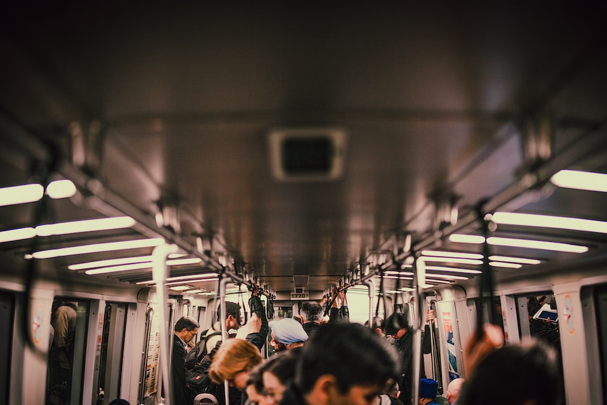

Our Fares
| Type of Fare | Price |
|---|---|
| Cash fare | $3.75 |
| Single ticket/transfer (from the fare vending machine) | $3.75 |
| Children (4 and under) Maximum 3 children with fare paying customer |
Free |
| New EasyGO fare card | $5.00 |
| Stored value payment A single fare paid with the EasyGO fare card |
$2.80 |
| Stored value payment (Affordable Transit Program) A single fare paid with the EasyGO fare card. For those approved for the Affordable Transit Program. |
$1.55 |
| Stored value payment (Corporate pass holder) | $2.57 |
| Multi-ride fare Price per ride, loaded on a multi-ride card from the fare vending machine |
$3.50 |
Lost And Found

Act promptly to reclaim misplaced belongings.
GTS has limited space to store lost items.
- Lost bikes and electronics will be held for four weeks, and then donated.
- Items such as mittens, hats, umbrellas and books are kept for 1-2 weeks, and then donated to a local charity.
- Government or legal documentation will be held for four weeks, and then mailed to the appropriate government office or legal department.
An ID is necessary.
Ensure you have identification ready when collecting a lost item, and be prepared to provide a detailed description of the item. Only the owner of the lost item can claim it; third parties will not receive lost items.